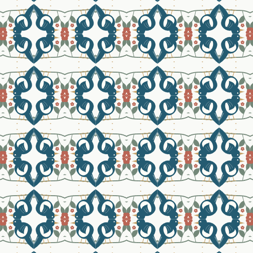
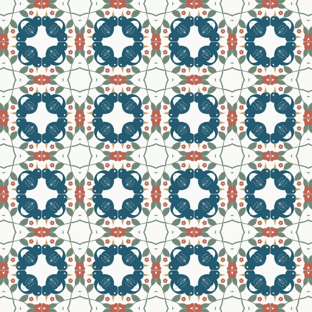
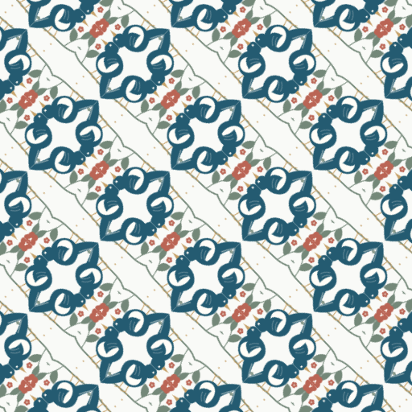
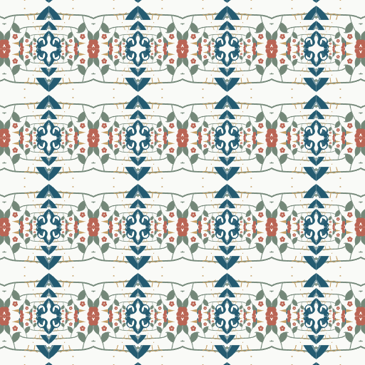
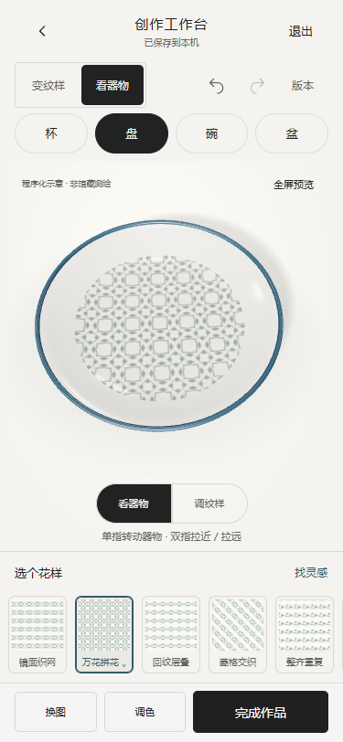

手机工作台：局部取样与拼花变纹
2026-10-30 · 已修改并运行 · 仅本地，没有发布
入口：本地工作台。刷新后点「拼花变纹」，选择效果，再点「拖动变纹」。拖动素材选择细节，双指放大和旋转；器物上的结果同步改变。
本次改变
- 保留原有 8 种排布，新增镜面织网、万花拼花、菱格交织、回纹层叠 4 种局部重组方式。使用真实 SVG 取样、镜像、三角切片和重复单元，不是预制效果图。
- 经典排布和拼花变纹分组。浏览分组不会修改草稿；点击具体效果才应用。首次从完整素材进入拼花时自动取 55% 局部，操作可撤销。
- 取样与器物同屏：单指拖动，双指放大/旋转。只保留「放大细节」「纹样疏密」两个直接控件；精细参数在更多中，原功能仍可访问。
- 取样旋转参数纳入历史、关键版本、已保存作品及持久化，旧草稿默认零度；源素材与器型关联不变。
- 镜面织网、万花拼花、回纹层叠支持重复单元导出和平铺检查。菱格交织本轮支持完整画布导出，未开放重复单元。
参考与边界
重新查看了先前从 Repper 官方手机页面保存的演示逐帧图，核对其连续取样和效果选择过程；阅读了 手机网页版介绍、素材取样→纹样单元→表面输出的说明和镜像与缩放参数的官方演示说明。本次直接打开交互编辑器超时，因此不声称本轮完整操作过其在线编辑器。实现为本项目自己的简化算法，未复制对方源码、素材或整套界面。
真实输出示例

镜面织网
万花拼花
菱格交织
回纹层叠375px 手机模拟截图

实际修改文件
- prototype/pattern-layouts.js：连续拼花类别与单元尺度。
- prototype/pattern-texture.js：取样旋转、镜像切片、重复单元、预览及导出共用输出。
- prototype/workbench.js、prototype/workbench.css：分组、变纹面板、直接手势、窄屏布局与参数入口。
- prototype/model.js、prototype/foundation.js、prototype/editor-model.js：取样旋转的状态、默认值及版本恢复。
- tests/workbench.test.cjs：增加取样旋转的保存与作品参数覆盖。
- scripts/qa-symmetry-workbench.cjs、scripts/qa-symmetry-pixels.cjs：新增交互及真实像素验收。
- scripts/qa-mobile-focus.cjs、scripts/qa-live-workbench.cjs、scripts/qa-workbench.cjs：更新现有回归脚本的入口路径与标签。
- index.html、物之再生-H5-单文件.html：重新构建的单文件版本。
- 本报告、docs/symmetry-*-results.json 和 previews/symmetry-*.png。
亲自执行的验收
- npm test：91/91；npm run lint、npm run build：通过。
- qa-symmetry-workbench.cjs：四种实际 PNG、拖动时 3D 更新、手势提交/取消、单次手势单次撤销、重做、刷新恢复、快照恢复、四器型保留纹样、PNG 下载；320/375/390/430px 检查保存和变纹按钮完整可见。
- qa-symmetry-pixels.cjs：本地构造并存储 PNG 图像；取样位置、尺寸、旋转、密度和四种对称输出的 9 份像素散列各不相同；三种重复单元测试图的对边平均色差为 0；缺失源文件明确报错。
- qa-mobile-focus.cjs、qa-live-workbench.cjs、qa-workbench.cjs：原有器物手势、平面编辑、素材取样、配色、快照、返回、平铺、PNG/SVG 导出通过。
- qa-round05-build.cjs：单文件应用的三导航和真实 3D 加载通过。
过程中发现 320px 的面板遮挡与保存按钮超出视口，已调整并重新执行窄屏测试。浏览器为 Headless Edge 手机模拟和 CDP 触摸事件，并非物理手机；尚未验证微信/Safari 真机性能。新功能全部本地运行，不调用 AI，不上传用户图片。当前素材与器物仍标记为示意。
交互验收结果 · 像素与边缘验收结果 · 原手势回归结果